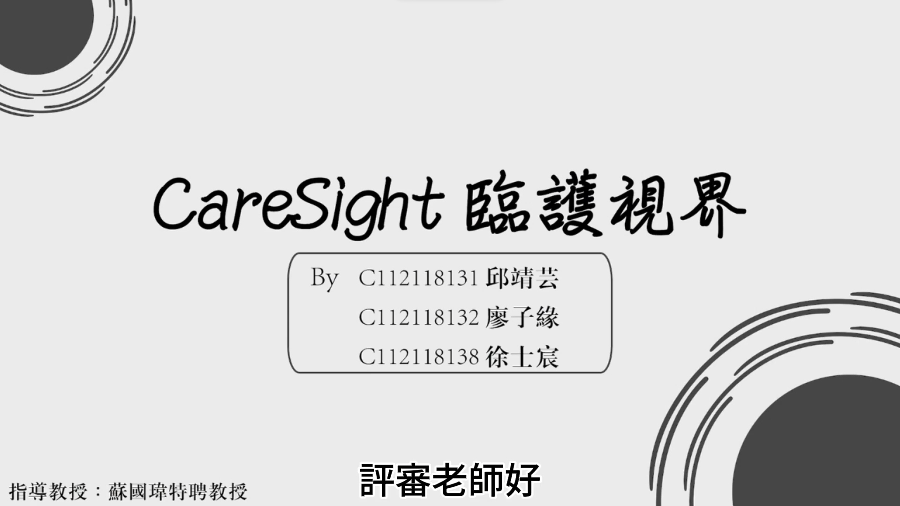
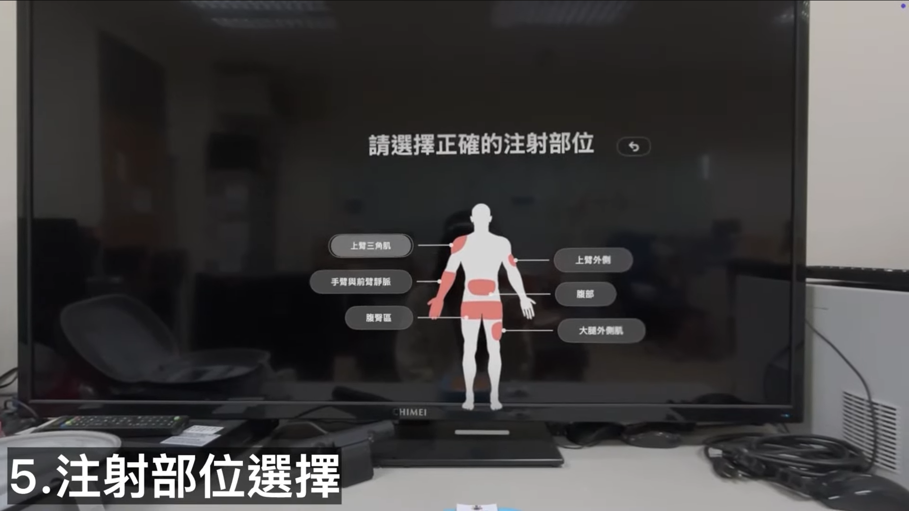
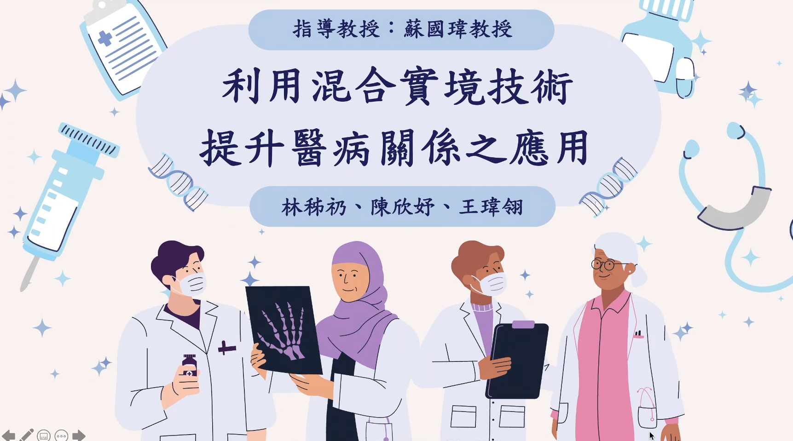
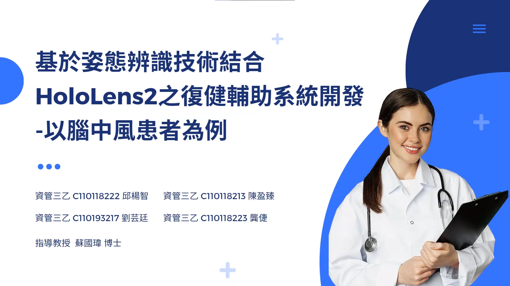
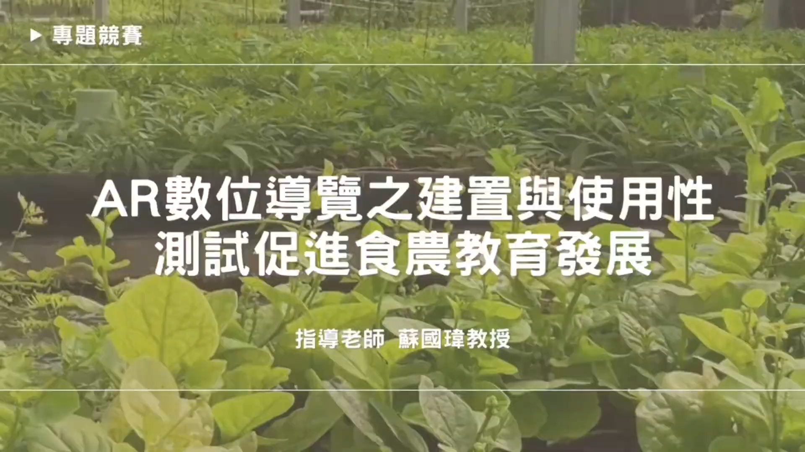
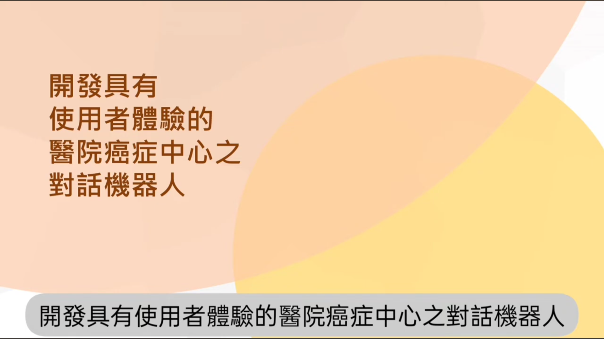

VIDEOS
Videos
Capstone project presentations, system demos, and media interviews from the lab.
Video List

June 2026 Capstone Project Competition
🏅 Honorable MentionAdvised students in the "2026 Capstone Project Competition," project【CareSight】.
Team Members:Ching-Yun Chiu, Tzu-Yuan Liao, Shih-Chen Hsu

June 2026 Capstone Project Competition
🏅 Honorable MentionAdvised students in the "2026 Capstone Project Competition," project【Applying Mixed Reality and Ergonomics to a Nursing Injection Training System】.
Team Members:Chu-Hsi Hsu, Yu-Ping Pei, Yu-Chen Chen

June 2024 Capstone Project Competition
🏆 Gold AwardAdvised students in the "2024 Capstone Project Competition," project【Using Mixed Reality to Improve the Doctor-Patient Relationship】.
Team Members:Tzu-Reng Lin, Hsin-Yu Chen, Wei-Ling Wang

June 2024 Capstone Project Competition
🏆 Gold AwardAdvised students in the "2024 Capstone Project Competition," project【A Rehabilitation Assistance System Based on Pose Recognition and HoloLens2 — for Stroke Patients】.
Team Members:Chieh Kung, Ying-Chen Chen, Yang-Chih Chiu, Yun-Ting Liu

June 2023 Capstone Project Competition
🥉 3rd PlaceAdvised students in the "2023 Capstone Project Competition," project【AR Experience Menu】.
Team Members:Hsiao-Fan Lin, Chung-Wen Hung, Pei-Yu Wu

June 2022 Capstone Project Competition
🥇 1st PlaceAdvised students in the "2022 Capstone Project Competition," project【Building and Usability Testing of an AR Digital Guide to Promote Food & Agriculture Education】.
Team Members:Ya-Fang Lin, Yi-Hsin Kao, Chang-Ju Liu

June 2022 Capstone Project Competition
🏅 Honorable MentionAdvised students in the "2022 Capstone Project Competition," project【Developing a User-Experience-Driven Chatbot for a Hospital Cancer Center】.
Team Members:Pei-Chun Chang, Hsiu-Chiao Hsu, Yueh-Ju Lin